1. Einführung
Aropas (Active Rock-Paper-Scissors) ist das traditionelle Schere-Stein-Papier-Spiel, neu erfunden mit einer dynamischen, körperlichen Note. Anstatt nur Ihre Finger zu benutzen, spielen Sie diese Version mit Ihrem gesamten Körper. Indem Sie verschiedene Ganzkörper-Posen für Stein, Papier oder Schere einnehmen, dehnen und beanspruchen Sie aktiv die Muskeln und Gelenke in Armen, Beinen und Rumpf, während Ihre Handbewegungen zur Entspannung von Fingern und Handgelenken beitragen.
Das macht Aropas zur perfekten Möglichkeit, langes Sitzen in fester Position zu unterbrechen – egal ob Sie am Computer arbeiten oder auf Ihr Smartphone schauen. Zum Spielen legen Sie Ihr Telefon einfach hin und machen Gesten über dem Bildschirm oder stellen Ihr Telefon vertikal auf, treten in das Sichtfeld der Kamera zurück und machen Ihre Posen gegen die KI. Gewinnen oder Verlieren spielt keine Rolle – der echte Sieg besteht darin, Ihren Körper zu bewegen, sich zu dehnen und eine wohlverdiente Pause vom Bildschirm einzulegen.
Körper-Schere-Stein-Papier wird genau wie die weltweit beliebte Hand-Variante gespielt. Zahlreiche Beispiele aus der Praxis sind im Internet zu finden. So hat beispielsweise Prof. Dr. Christian Andrä, Experte für Bewegungs- und Sportpädagogik, zusammen mit seinen Studierenden auf seinem YouTube-Kanal eine Version von Körper-Schere-Stein-Papier demonstriert und deren gesundheitliche und fitnessfördernde Vorteile für Jung und Alt hervorgehoben.
Die Posen für Stein, Papier, Schere stammen aus der YouTube-Demonstration wie folgt:
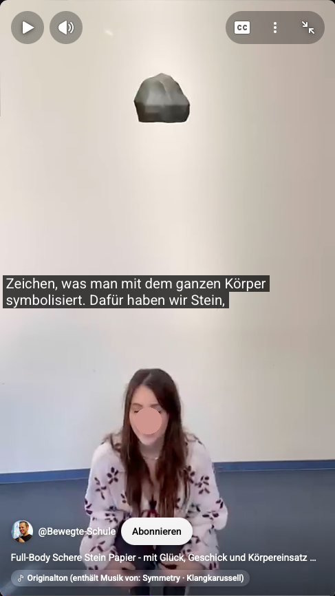
Körper Stein-Pose Körper Papier-Pose
Körper Papier-Pose
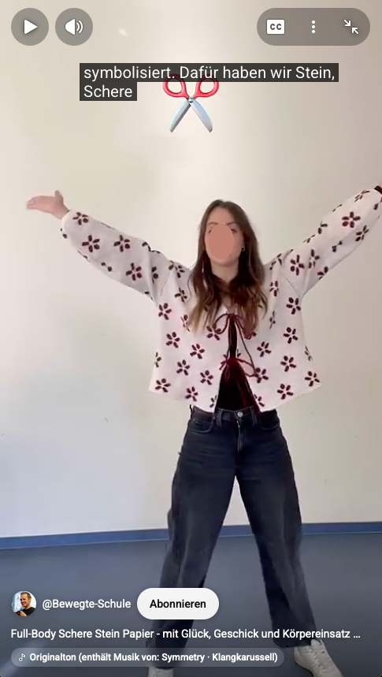
Körper Schere-Pose Spiel mit Partner
Spiel mit Partner
Traditionell erfordert Schere-Stein-Papier einen Partner direkt vor Ihnen. Um diese Einschränkung zu überwinden, nutzt Aropas moderne Technologie, insbesondere Ihr Smartphone und Künstliche Intelligenz (KI). Ihr Telefon fungiert als interaktiver Gegner, indem es über seine Kamera Ihre Live-Gesten und Körperhaltungen erkennt, sodass Sie das volle Gewinn-, Verlust- oder Unentschieden-Erlebnis ganz alleine genießen können.
Darüber hinaus führen moderne Arbeits- und Freizeitroutinen oft dazu, dass wir längere Zeit in statischer Haltung vor Bildschirmen verbringen, was häufig zu körperlichen Beschwerden führt. Aropas bietet die ideale aktive Pause vom bewegungsarmen Bildschirmalltag, um Ihr Wohlbefinden wieder ins Gleichgewicht zu bringen. Indem Sie sich nur für einen Moment von Ihrem Gerät entfernen, können Sie sich aktiv dehnen, bewegen und Spannungen im gesamten Körper lösen.
2. Funktionen von Aropas
Das Spiel verfügt über vier Hauptseiten – Auto Play, Active Play, Active Body Play und General Settings –, durch die Sie mit den Pfeilanzeigen in der oberen Leiste leicht navigieren können:
• Auto Play: Schauen Sie zu, wie zwei KI-Spieler direkt auf Ihrem Telefon gegeneinander antreten. Je nach Wunsch können Sie mit einem einzigen Klick oder mehreren Klicks auf die Wiedergabetaste den Vollautomatik- oder Halbautomatik-Modus wählen.
 Ein Spiel nach Klick auf 'Play', Gelb zeigt ein 'Unentschieden' für dieses Spiel an (1. Spiel, R1)
Ein Spiel nach Klick auf 'Play', Gelb zeigt ein 'Unentschieden' für dieses Spiel an (1. Spiel, R1)
 Ein Spiel nach Klick auf 'Play', Rot / Grün zeigt 'Verloren'/'Gewonnen' für das 2. Spiel an (R2)
Ein Spiel nach Klick auf 'Play', Rot / Grün zeigt 'Verloren'/'Gewonnen' für das 2. Spiel an (R2)
 Ergebnis dieser Runde, Gelb zeigt Unentschieden für die gesamte Runde mit überlagertem Text an
Ergebnis dieser Runde, Gelb zeigt Unentschieden für die gesamte Runde mit überlagertem Text an
 Ansicht nach Klick auf 'Check', hier ist das 3. Spiel (R3), R1 und R2 sind ebenfalls gespeichert, Klick auf Links/Rechts-Pfeile zum Durchsuchen
Ansicht nach Klick auf 'Check', hier ist das 3. Spiel (R3), R1 und R2 sind ebenfalls gespeichert, Klick auf Links/Rechts-Pfeile zum Durchsuchen
• Active Play: Treten Sie gegen Ihr Telefon an! In diesem Modus ist Ihr Telefon Spieler 1 und Sie sind Spieler 2. Je nach gewähltem Modus können Sie entweder auf die Gestensymbole auf dem Bildschirm tippen oder Ihre echten Handgesten direkt der geöffneten Kamera zeigen.
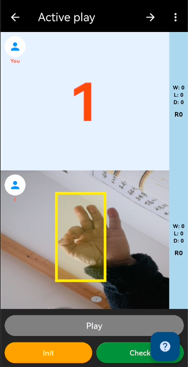
Klicken auf die Spieltaste, oder Machen Sie das OK-Zeichen, um eine Runde zu starten; führen Sie dies für jedes Spiel dieser Runde aus Das 1. Spiel dieser Runde, nachdem das OK-Zeichen erkannt wurde
Das 1. Spiel dieser Runde, nachdem das OK-Zeichen erkannt wurde
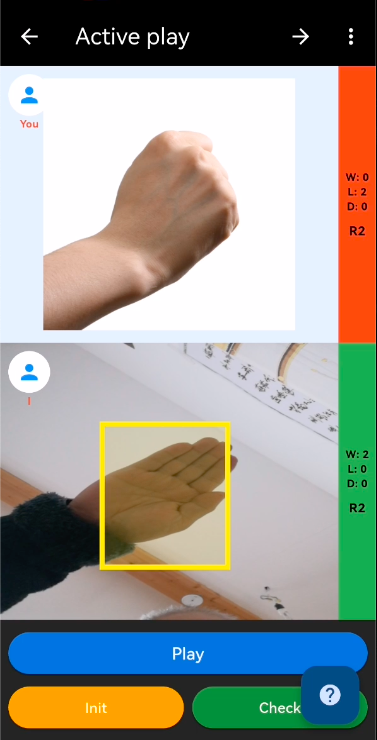
Das 2. Spiel dieser Runde, nachdem das OK-Zeichen erkannt wurde Das 3. Spiel dieser Runde, nachdem das OK-Zeichen erkannt wurde
Das 3. Spiel dieser Runde, nachdem das OK-Zeichen erkannt wurde
 Herzlichen Glückwunsch! Sie haben gewonnen
Herzlichen Glückwunsch! Sie haben gewonnen
• Active Body Play: Sie gegen Ihr Telefon in einer Ganzkörper-Herausforderung! Wählen Sie, ob Sie durch Tippen auf die Haltungssymbole spielen oder zurücktreten möchten, um echte physische Posen vor der Kamera Ihres Telefons einzunehmen.
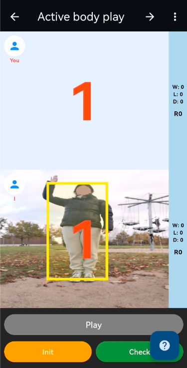
Klicken auf die Spieltaste, weg von Deinem Handy, oder Halten Sie eine Hand über den Kopf (sichtbar und mit Ton), um ein Spiel zu starten Das 1. Spiel dieser Runde, nachdem eine Hand über dem Kopf erkannt wurde
Das 1. Spiel dieser Runde, nachdem eine Hand über dem Kopf erkannt wurde
 Das 2. Spiel dieser Runde, nachdem eine Hand über dem Kopf erkannt wurde
Das 2. Spiel dieser Runde, nachdem eine Hand über dem Kopf erkannt wurde
 Das 3. Spiel dieser Runde, nachdem eine Hand über dem Kopf erkannt wurde
Das 3. Spiel dieser Runde, nachdem eine Hand über dem Kopf erkannt wurde
 Herzlichen Glückwunsch! Gewonnen
Herzlichen Glückwunsch! Gewonnen
Passen Sie Ihr Training an: Die körperliche Intensität dieser drei Modi skaliert von leicht bis schwer – von einem einfachen Button-Klick bis hin zu Ganzkörper-Bewegungen. Sie entscheiden selbst, wie viel Sie sich bewegen möchten!
• General Settings (Allgemeine Einstellungen): In diesem Bereich können Sie Ihr Erlebnis individuell anpassen. Legen Sie Spielernamen fest, wählen Sie Profilfotos, wählen Sie Countdown-Stimmen, Ihre Lieblings-Siegesmusik und ändern Sie die App-Sprache nach Ihren Wünschen.
3. Mögliche Körperhaltungen
Erleben Sie aktives Gaming in voller Körperbewegung! Aropas unterstützt Ganzkörper-Haltungstracking, bei dem Bewegungen in Spielaktionen übersetzt werden, was zu körperlicher Aktivität und interaktivem Spiel anregt. Nachfolgend finden Sie Beispiele für Körperhaltungen nach Spielzug, die in bisherigen Offline-Tests erkannt wurden:
Kategorie: Papier (paper)
Dies ist eine entspannte Haltung, stehend und mit Abstand zum Telefon oder Arbeitsplatz
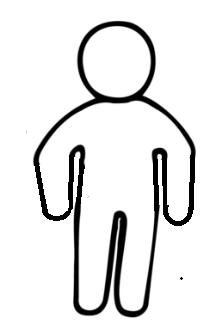
Papier Muster Papier Haltung 1
Papier Haltung 1
 Papier Haltung 2
Papier Haltung 2
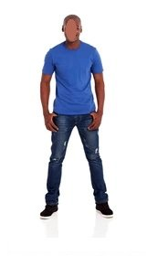
Papier Haltung 3Kategorie: Schere (scissors)
Sie ergeben sich nicht, sondern dehnen sich; wenn Sie die Fersen anheben und auf den Zehenspitzen stehen, werden nach TCM noch bessere gesundheitliche Effekte erzielt
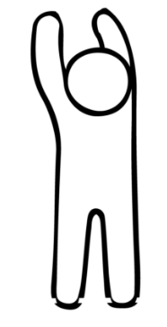
Schere Muster Schere Haltung 1
Schere Haltung 1
 Schere Haltung 2
Schere Haltung 2
 Schere Haltung 3
Schere Haltung 3
 Schere Haltung 4
Schere Haltung 4
 Schere Haltung 5
Schere Haltung 5
Kategorie: Stein (rock)
Hier ist das Muster eine einfache Hocke; Sie können wählen, was Sie möchten und können. Denken Sie daran, innerhalb von 2 Sekunden nach Erscheinen der "1" und gesprochenem Countdown fertig zu werden, das Gleichgewicht zu halten und sich auf die nächste Pose vorzubereiten. Wenn Sie eine schwierige Pose wählen, ist dies eine echte Herausforderung für Sie und den KI-Erkennungsalgorithmus!
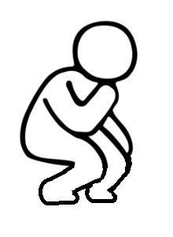
Stein Muster
 Stein Haltung 1, 2
Stein Haltung 1, 2
 Stein Haltung 3
Stein Haltung 3
 Stein Haltung 4
Stein Haltung 4
 Stein Haltung 5
Stein Haltung 5
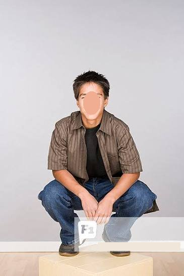
Stein Haltung 6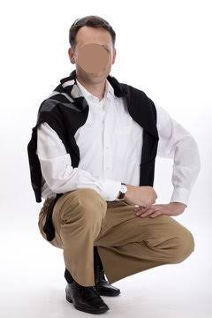
Stein Haltung 7 Stein Haltung 8
Stein Haltung 8
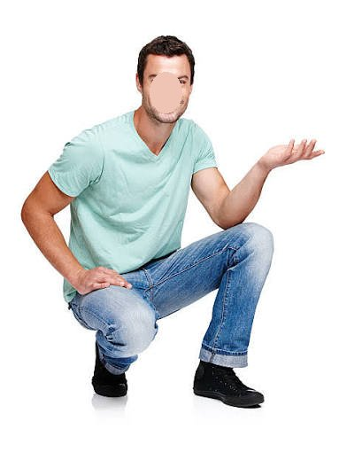
Stein Haltung 9 Stein Haltung 10
Stein Haltung 10
 Stein Haltung 11
Stein Haltung 11
 Stein Haltung 12
Stein Haltung 12
 Stein Haltung 13
Stein Haltung 13
 Stein Haltung 14
Stein Haltung 14